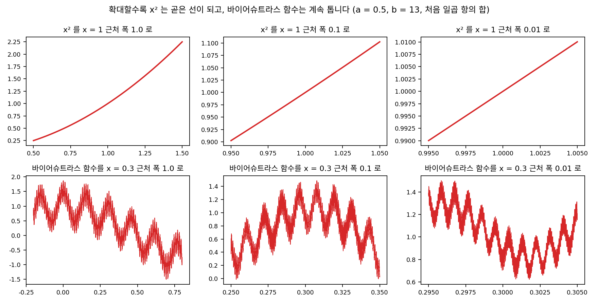
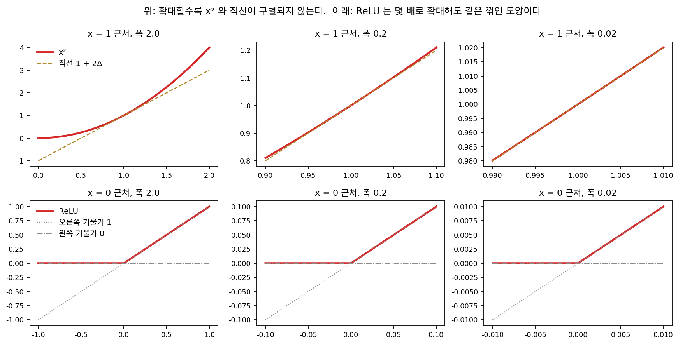
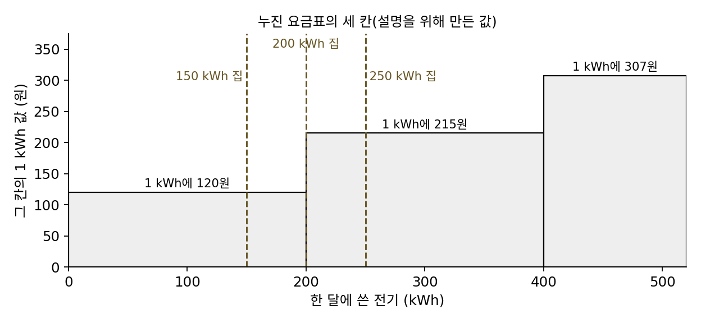
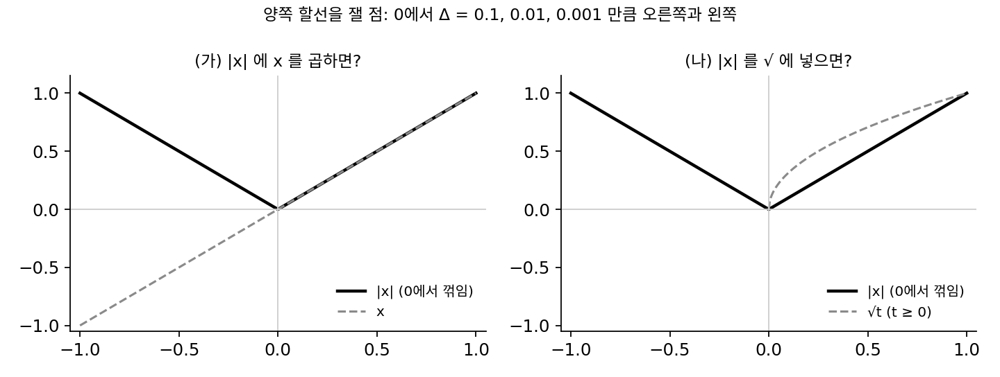
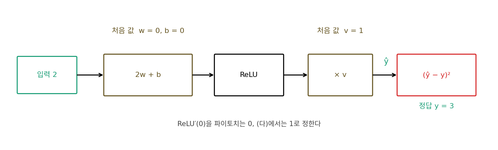

그래디언트와 자코비안: 미분 가능성에서 연쇄법칙까지
이 장의 물음
손실 지형 위에 공을 하나 올려놓으면 공은 지형 전체를 보지 않고, 지금 닿아 있는 땅이 어느 쪽으로 기울었는지만 느끼며 낮은 쪽으로 굴러간다. 최적화 방법들도 대부분 이 공처럼 발밑만 보고 움직인다. 그런데 공에게 「발밑이 기운 쪽」은 분명하지만, 파라미터(학습으로 고치는 숫자들)가 수백만 개인 신경망에서 「기운 쪽」은 무엇을 가리키는 말일까? 변수가 하나일 때 고등학교에서 배운 미분은 숫자 하나였다. 변수가 수백만 개이면 숫자 수백만 개를 따로따로 구하면 되는 걸까, 아니면 그 숫자들을 묶었을 때 비로소 생기는 뜻이 있을까?
신경망에는 매끈하지 않은 곳도 있다. 가장 흔한 활성화 함수인 ReLU(음수는 0으로, 양수는 그대로 내보내는 함수)는 0에서 꺾여 있다. 꺾인 곳에서도 파이토치는 아무 불평 없이 미분값을 돌려주는데, 그 미분값은 어디서 온 것이고 믿어도 될까?
그리고 신경망의 층 하나는 숫자 하나가 아니라 숫자 여러 개를 내놓아서, 입력이 조금 바뀌면 출력 여러 개가 함께 바뀐다. 이 함께 바뀌는 모습은 숫자 몇 개로 적을 수 있을까? 층을 수십 개 쌓으면 그 적어 둔 것들을 어떻게 이어 붙여야 맨 끝의 손실이 맨 앞의 파라미터에 얼마나 민감한지 알 수 있을까?
이 장은 다음 물음에 차례로 답한다.
- 「이 점에서 미분할 수 있다」는 말은 무엇을 뜻할까? 꺾인 점에서는 무엇이 깨질까?
- 변수가 여럿인 함수에서 가장 가파르게 올라가는 방향은 어떻게 찾을까?
- 입력도 여럿, 출력도 여럿인 함수의 「미분」은 무엇으로 적을까?
- 함수를 여러 번 거친 결과의 미분은 각 함수의 미분에서 어떻게 얻을까?
미분 가능성: 확대하면 직선이 된다
경사하강 같은 방법은 「지금 자리에서 조금 움직이면 손실이 얼마나 바뀌는가」를 알아야 한 스텝을 정할 수 있다. 그 정보가 미분이다. 그런데 신경망에는 ReLU처럼 꺾인 점이 있고, 학습 중에 입력이 정확히 그 점에 놓이는 일도 생긴다. 꺾인 점에서 파이토치가 돌려주는 미분값은 무엇일까? 꺾인 점의 미분값을 따지려면 먼저 「미분할 수 있다」가 무엇을 약속하는 말인지부터 분명히 해야 한다.
역사: 연속이면 미분할 수 있다고 믿던 시절
19세기 초까지 많은 수학자는 끊어지지 않고 이어진 함수라면 몇몇 따로 떨어진 점을 빼고는 어디서나 미분할 수 있다고 여겼다. 1806년 앙드레마리 앙페르(André-Marie Ampère)가 에콜 폴리테크니크의 학술지에 이 생각을 뒷받침하려는 논증을 실었고, 그 뒤 여러 미적분 교과서가 비슷한 설명을 따랐다고 전해진다. 그 논증은 그림에서 얻은 직관에 기대고 있었다. 손으로 그릴 수 있는 곡선은 아무리 구불구불해도 한 점 근처를 확대하면 결국 매끈해 보이기 때문이다.
이 믿음은 1872년 7월 18일에 무너졌다. 카를 바이어슈트라스(Karl Weierstrass)가 베를린의 프로이센 왕립 과학 아카데미에서, 어디서나 연속인데 어디서도 미분할 수 없는 함수를 보이고 그 증명을 발표한 것이다. 그의 함수는 코사인 파동을 더해 만든다. 진폭을 a배씩 줄이면서 진동수를 b배씩 늘린 코사인을 끝없이 더하는데, a와 b가 정한 조건을 넘으면 새로 더해지는 잔물결의 기울기가 그 앞 잔물결의 기울기보다 오히려 커진다. 그래서 어느 점에서 확대해도 직선 대신 더 잘게 쪼개진 톱니가 나타난다. 이 발표는 당시 아카데미 회보에 제목 한 줄로만 실렸고, 전문은 나중에 그의 전집에 실렸다. 바이어슈트라스는 가우스를 포함한 앞 세대 수학자들이 연속이면 거의 어디서나 미분할 수 있다고 흔히 가정해 왔다고 적었다. 이 일 뒤로 수학자들은 「연속」과 「미분 가능」을 다른 성질로 다루기 시작했다.


그런 함수라면 지금은 그려 보면 바로 알잖아요. 앙페르도 확대해서 그려 볼 수 있었으면 그런 논증은 안 했을 것 같은데요.

위 그림도 일곱 항까지만 더한 거예요. 일곱째 항 하나만 해도 x가 0에서 1까지 가는 동안 잔물결이 241만 번쯤 오르내려요. 그런데 진짜 함수는 항을 끝없이 더하죠. 그걸 그림으로 확인할 수 있을까요?

음, 캡션에 몇 항을 그리든 충분히 확대하면 매끈해진다고 했어요. 그러면 그림만 보면 오히려 앙페르 말이 맞아 보이겠네요.

그래서 바이어슈트라스에게 필요했던 건 더 좋은 그림이 아니라, 「확대해도 직선이 되지 않는다」를 부등식으로 따지는 말이었어요. 앙페르가 논증을 낸 1806년은 코시가 극한을 다룬 『해석학 강의(Cours d’analyse)』(1821)를 내기 15년 전이에요.

손으로 그린 곡선만 보던 사람한테는 확대하면 매끈해진다는 게 당연한 사실이었겠네요. 반례가 있어도 그려서 보여 줄 수가 없고요.

그러면 「확대하면 직선이 된다」를 그림 대신 숫자로 확인하려면, 확대하면서 무엇을 재야 해요?
확대 시험: x²와 ReLU
미분할 수 있다는 것이 무엇인지 보려면, 미분할 수 있다고 확신하는 함수 하나와 꺾인 함수 하나를 나란히 놓고 같은 시험을 해 보는 것이 가장 빠르다. 매끈한 쪽은 f(x) = x²의 x = 1, 꺾인 쪽은 ReLU의 x = 0으로 하자. 시험은 간단하다. 점에서 오른쪽으로 Δ만큼, 왼쪽으로 Δ만큼 간 곳과 이은 할선(곡선 위 두 점을 잇는 직선)의 기울기 (f(x + Δ) − f(x))/Δ를 Δ를 줄여 가며 잰다.
| Δ | x²의 1에서, 오른쪽 | x²의 1에서, 왼쪽 | ReLU의 0에서, 오른쪽 | ReLU의 0에서, 왼쪽 |
|---|---|---|---|---|
| 0.1 | 2.1 | 1.9 | 1 | 0 |
| 0.01 | 2.01 | 1.99 | 1 | 0 |
| 0.001 | 2.001 | 1.999 | 1 | 0 |
x²에서는 양쪽 할선의 기울기가 Δ를 줄일수록 2라는 한 값으로 모이지만, ReLU에서는 Δ를 아무리 줄여도 오른쪽은 1, 왼쪽은 0에서 꿈쩍하지 않는다. x²와 ReLU의 이런 차이를 직선 근사의 오차로도 말할 수 있다. x²를 1 근처에서 직선 1 + 2Δ로 근사하면 남는 오차가 꼭 Δ²이고, 오차를 Δ로 나눈 값은 0.1, 0.01, 0.001로 0을 향해 간다. 직선과의 차이가 움직인 거리보다 훨씬 빨리 작아진다는 뜻이어서, 그래프를 확대할수록 곡선과 직선이 구별되지 않는다. ReLU의 꺾인 점에서는 어떤 직선을 골라도 이렇게 되지 않는다. 같은 계산을 |x|의 0에서 해 보면, 기울기가 0인 직선을 고르든 0.5인 직선을 고르든, 오차를 Δ로 나눈 값이 양쪽 가운데 한쪽에서는 1 아래로 내려가지 않는다(기울기 0일 때 1, 0.5일 때 1.5).
이렇게 한 점 근처에서 함수를 직선 하나로 근사했을 때 그 오차가 움직인 거리보다 빨리 0으로 줄어들면, 그 점에서 미분 가능 (확대하면 직선이 된다 / differentiable)하다고 한다. 그 직선의 기울기가 미분값이다.
이 정의는 「양쪽 할선의 기울기가 같은 값으로 모인다」는 말과 같지만, 직선 근사를 앞에 세웠다는 점이 다르다. 이 장의 나머지는 모두 직선 근사를 넓혀 가는 이야기로, 변수가 여럿이면 근사 직선 대신 근사 평면이, 출력이 여럿이면 행렬이 들어간다.

ML에서: 꺾인 점에서 자동 미분이 돌려주는 값
ReLU는 0에서 미분 가능하지 않다. 그런데도 파이토치에 torch.relu의 입력으로 정확히 0을 넣고 미분을 시키면 0을 돌려준다. 오른쪽 기울기 1과 왼쪽 기울기 0 사이의 값이라면 무엇을 골라도 「꺾인 점의 미분」으로 변명할 수 있으므로, 라이브러리는 그 가운데 하나를 약속으로 정해 둔 것이다. 0을 고르든 1을 고르든 꺾인 점 바로 옆에서는 맞는 값이 나오므로, 이 약속은 입력이 정확히 0에 떨어질 때만 결과를 바꾼다.
그 「정확히 0」은 얼마나 자주 생길까? 다비드 베르투앙(David Bertoin)과 동료들은 2021년 신경정보처리시스템 학회(NeurIPS) 논문 「ReLU′(0)이 역전파에 주는 수치적 영향」에서 이것을 실험으로 따졌다. 이론으로는 거의 상관없어야 하는데, 32비트 실수로 계산하는 보통의 학습에서는 실험한 경우의 절반쯤에서 ReLU′(0)을 0으로 두느냐 1로 두느냐에 따라 역전파 결과가 눈에 띄게 달라졌다. 64비트로 계산하면 차이가 사라지고 16비트에서는 늘 나타났다. 실수를 유한한 자릿수로 적다 보니 계산 도중에 정확히 0이 생각보다 자주 나온다는 것이다. 보통의 확률적 경사하강에서는 ReLU′(0)을 0으로 둘 때 결과가 가장 좋았다고 보고했다. 「미분 가능하지 않은 점은 확률 0이라 상관없다」는 말은 실수가 끝없는 자릿수를 가질 때의 이야기다.
문제 1. 누진 요금표의 「한 칸 더」
어느 동네의 전기 요금이 이렇게 매겨진다고 하자(설명을 위해 만든 요금표다). 한 달에 200 kWh까지는 1 kWh에 120원, 200 kWh를 넘어 쓴 전기는 1 kWh에 215원, 400 kWh를 넘어 쓴 전기는 307원이다. (가) 150 kWh, 250 kWh를 쓴 집이 1 kWh를 더 쓰면 요금은 얼마 늘고, 1 kWh를 덜 쓰면 얼마 주는가? (나) 정확히 200 kWh를 쓴 집에 「1 kWh당 요금이 얼마냐」고 물으면 무엇이라 답해야 하는가?

(가)는 150 kWh면 더 써도 덜 써도 첫 칸이라 120원, 250 kWh면 양쪽 다 둘째 칸이라 215원이에요.
(나)는 200 kWh에서 한 칸 더 쓰면 201번째 kWh가 둘째 칸이라 215원이 늘고, 덜 쓰면 200번째 kWh가 빠지니까 120원이 줄어. 늘 때와 줄 때가 달라.
150 kWh에서는 늘 때와 줄 때가 같았는데, 200 kWh에서는 왜 다를까요?
요금을 kWh의 함수로 그리면 200에서 꺾여요. ReLU랑 같은 모양이에요. 150이나 250에서는 확대하면 직선이니까 「1 kWh당 얼마」가 한 값인데, 200에서는 왼쪽 기울기 120과 오른쪽 기울기 215가 아무리 확대해도 달라요.
그러면 200 kWh인 집에 한 숫자로 답해야 한다면요?

120과 215 사이의 어떤 값을 골라도 「틀렸다」고는 못 해요. 대신 어느 쪽으로 움직일지 알아야 정확해요.
파이토치가 ReLU의 0에서 0을 고른 것도 그런 약속 하나였구나.
그래요. 꺾인 점에서는 왼쪽과 오른쪽 기울기가 달라서, 어느 쪽으로 움직이는지 알아야 값이 정해져요. 한 숫자로 답하는 것은 약속이에요.
문제 2. 꺾인 함수로 만든 매끈한 함수
(가) f(x) = x|x|는 x = 0에서 미분 가능한가? (나) f(x) = √|x|는 어떤가? 둘 다 0에서 양쪽 할선의 기울기를 Δ = 0.1, 0.01, 0.001에서 계산해 판단하라.

둘 다 |x|가 들어 있으니까 0에서 꺾였을 거예요. 둘 다 안 돼요.
계산해 볼까요? x|x|부터요.

오른쪽은 Δ·Δ/Δ = Δ라서 0.1, 0.01, 0.001이에요. 왼쪽은 (−Δ)·Δ/(−Δ)라서 이것도 0.1, 0.01, 0.001이고요. 양쪽이 같이 0으로 가요.
꺾였다고 했는데 미분이 되네요?
꺾인 게 아닌가 봐. |x|에 x를 곱하면 0 근처의 값이 x²만큼 작아지잖아.
그게 미분의 정의와 어떻게 이어지죠?
직선 0과의 차이가 움직인 거리보다 빨리 줄어요. 오차를 Δ로 나눈 값이 0으로 가니까 정의대로 미분값 0이에요.
√|x|도 해 볼게요. 오른쪽이 3.16, 10, 31.62로 커지고 왼쪽은 −3.16, −10, −31.62로 내려가요.

그럼 √|x|는 ReLU처럼 꺾인 것과 같은 경우인가요?
ReLU는 양쪽 할선의 기울기가 따로따로 정해진 값으로 모였는데, 이건 양쪽이 끝없이 커져요. 확대할수록 세로로 선 벽처럼 보이는 거예요.

미분 가능하지 않은 모양에도 꺾임과 수직 벽 두 가지가 있네요. 해석학 시간에 좌미분, 우미분이 있는지부터 따졌던 게 이 구분이었어요. 식에 절댓값이 보이는지가 아니라, 확대해서 숫자가 어떻게 모이는지를 봐야 하고요.
문제 3. 0으로 시작한 ReLU 뉴런
뉴런 하나짜리 모델 ŷ = v · ReLU(2w + b)를 샘플 하나(입력 2, 정답 y = 3)와 손실 (ŷ − y)²로 학습한다. 처음 값은 w = b = 0, v = 1이다. (가) 파이토치로 세 파라미터의 미분값을 구하면 얼마인가? (나) 학습률 0.01로 100스텝 학습하면 어떻게 되는가? (다) ReLU′(0)을 1로 정해 두었다면?

v가 1이니까 출력 쪽은 살아 있어요. 손실이 9나 되니까 미분값도 크게 나오겠죠. 돌려 볼게요. 어, 세 개 다 0이에요.
손실에서 w까지 거꾸로 따라가면 어떤 미분값들이 곱해지죠?
손실을 ŷ로 미분하면 2(0 − 3) = −6, ŷ를 ReLU 출력으로 미분하면 v = 1, ReLU를 그 입력으로 미분하면… 입력이 정확히 0이에요. 파이토치는 여기서 0을 쓰니까 다 지워져요. v 쪽은 ReLU 출력이 0이라 0이고요. 100스텝을 돌려도 w, b, v가 0, 0, 1에서 움직이지 않고 손실도 9에 머물러요.
ReLU′(0)을 1로 정하면 w의 미분값은 −6 × 1 × 1 × 2 = −12, b는 −6이야. 그러면 첫 스텝부터 움직이고, 100스텝 뒤에는 w = 0.8746, b = 0.4373, v = 1.3721로 손실이 0이 돼. 꺾인 점에서 고른 약속 하나가 학습을 하느냐 마느냐를 갈랐어.
그럼 ReLU′(0)은 늘 1로 두는 게 좋을까요? 그 전에, 보통의 무작위 초기화에서 ReLU 입력이 정확히 0이 되는 일이 얼마나 있을지 보세요.

784칸짜리 입력 256개를 뉴런 1000개에 넣어 봤어요. 가중치는 표준정규분포에서 뽑았고요. ReLU에 들어가는 값 25만 6천 개 가운데 정확히 0인 건 하나도 없어요. 이번 일은 모든 걸 0으로 시작해서 생긴 거네요.
그러니까 꺾인 점의 약속은 평소엔 거의 안 쓰이다가, 모두 0으로 시작하거나 숫자 자릿수가 모자라서 정확히 0이 생기는 특별한 때에만 결과를 바꾸는 거네요. 가중치를 0으로 초기화하지 말라는 얘기를 이런 쪽에서도 볼 수 있고요.